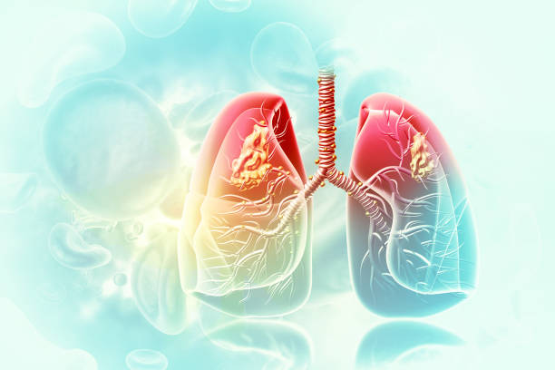

Simulación de la "Botella Fumadora/Vapeadora"
Como Anatomistas y Patólogos, vuestro objetivo es observar qué ocurre en el interior de los pulmones tras una sola sesión de inhalación. El algodón simulará el tejido alveolar, y la botella será nuestra caja torácica.
¡Así que vamos a ello!
https://youtu.be/rW78a9073sU?si=_Vu5QOnH-hiElgDJ

Materiales necesarios:
-Una botella de plástico transparente (1,5L).
-Algodón blanco hidrófilo.
-Un cigarrillo o un dispositivo de vapeo (bajo supervisión docente).
-Tubo de goma y plastilina para sellar.
-Instrucciones del experimento:
Desarrollo del experimento:
-Introducid el algodón en la botella y sellad el tapón con el cigarrillo/vaper atravesándolo.
-Succionad el aire de la botella (haciendo un agujero en la base o presionando) para forzar la entrada del humo/aerosol.
-Tras "fumar" el dispositivo, extraed el algodón con unas pinzas.
-Comparad el color y el olor del algodón antes y después. ¿Qué sustancias creéis que se han quedado atrapadas? ¿Cómo afectaría esto al intercambio de gases en el alvéolo?
Tras el desarrollo del experimento debéis elaborar un "Informe de Laboratorio" que incluya fotos del "antes" y el "después" del algodón.